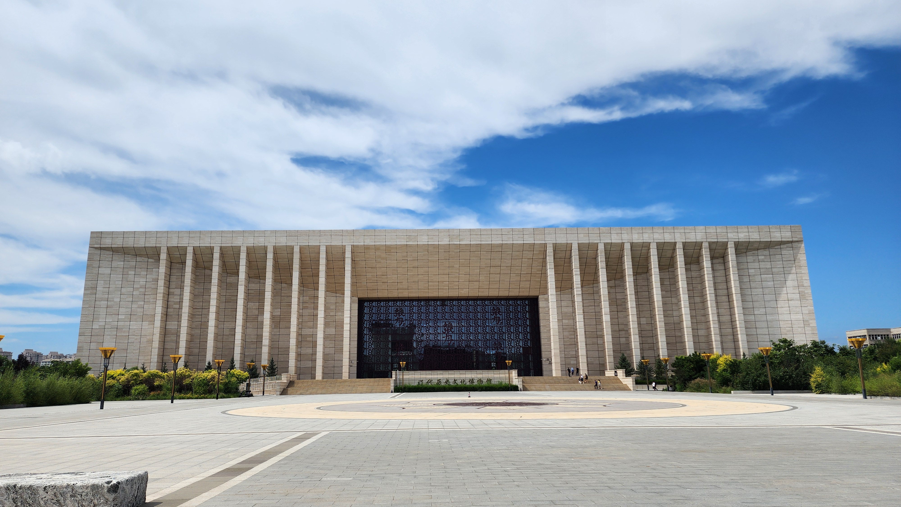
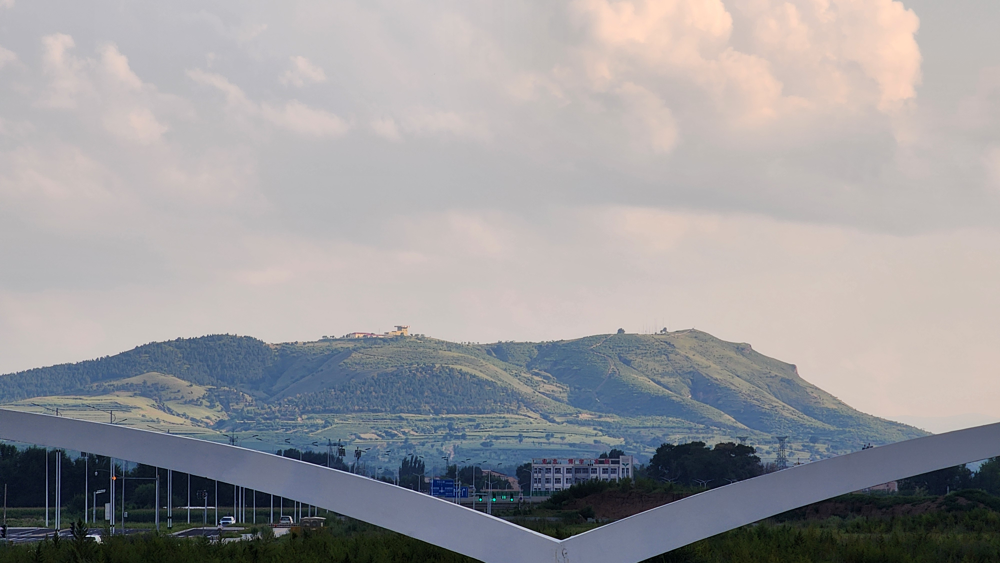
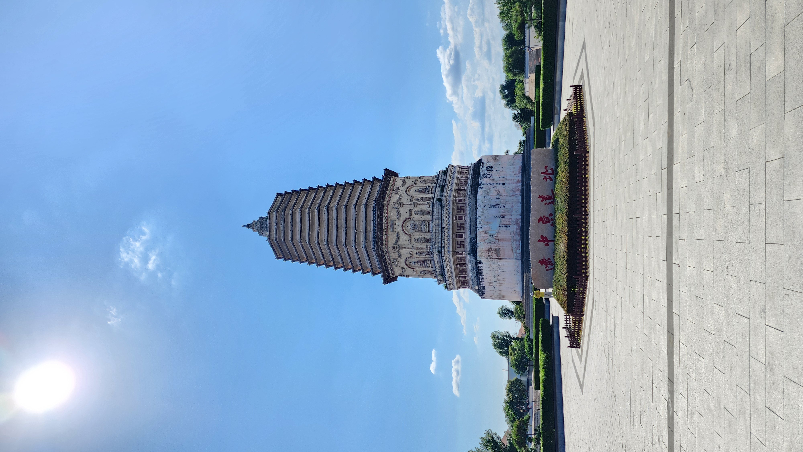
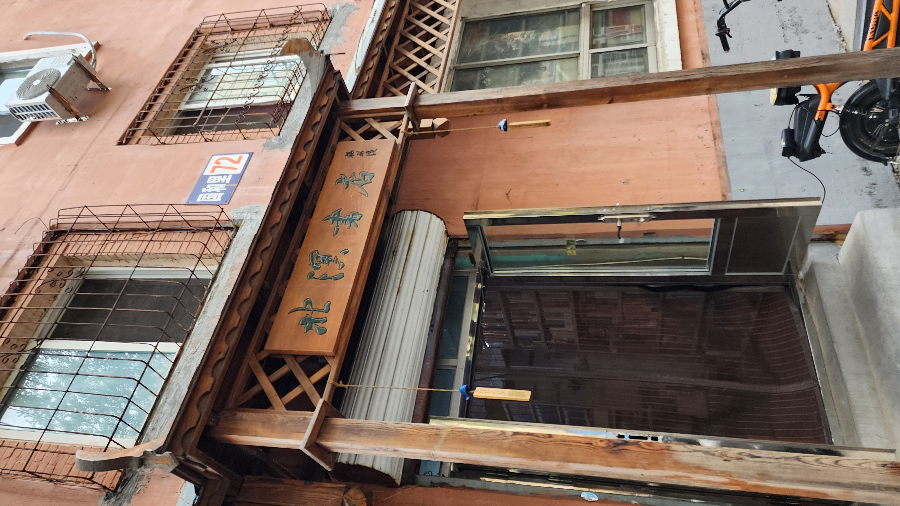
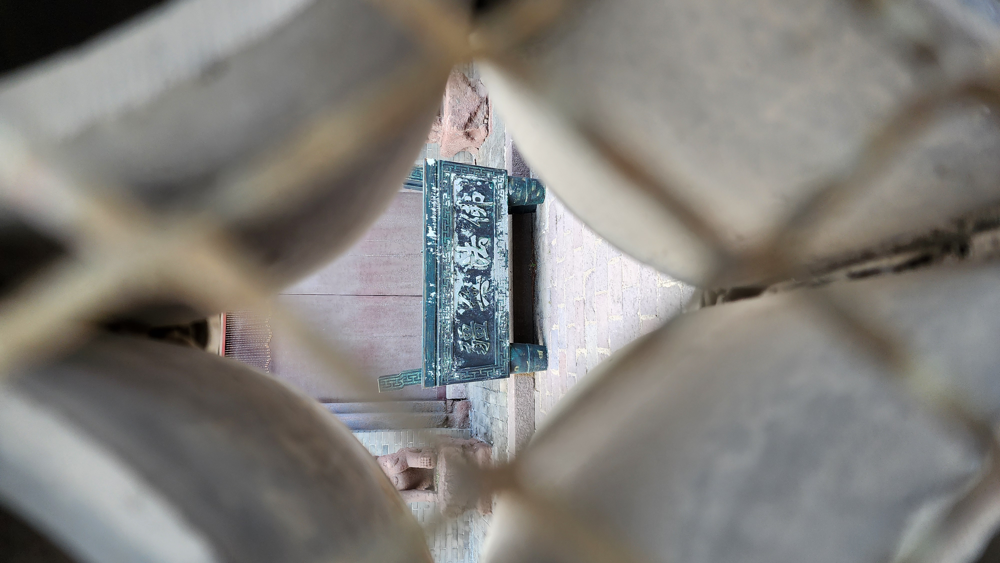
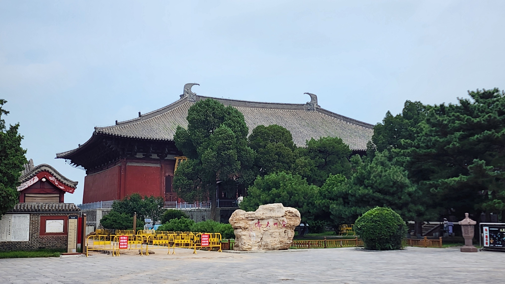
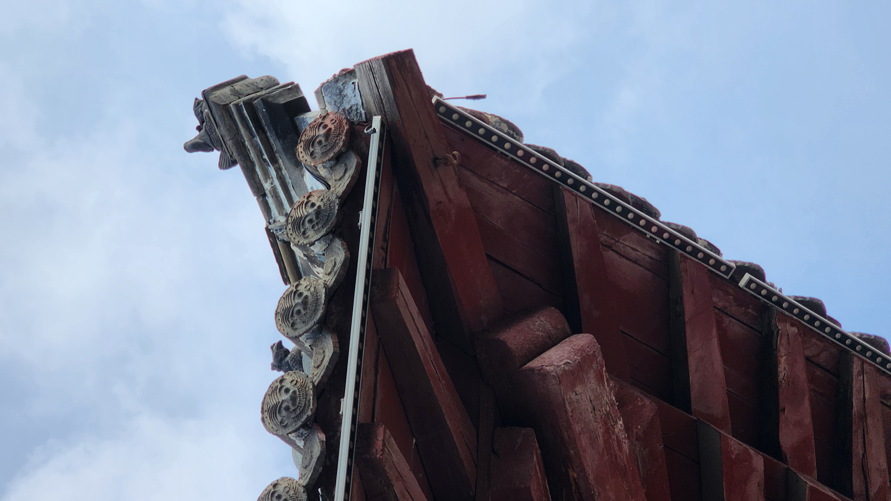
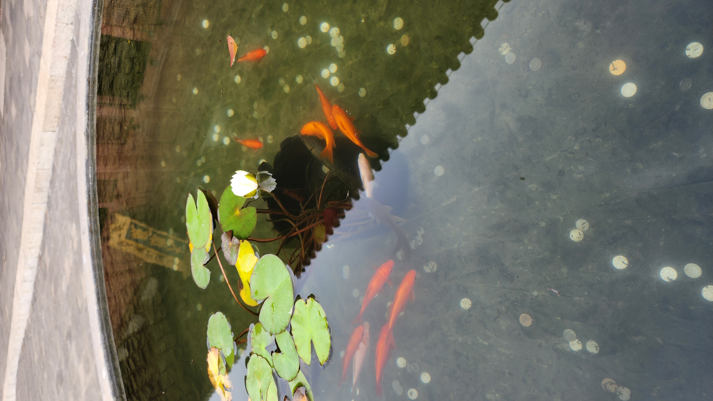
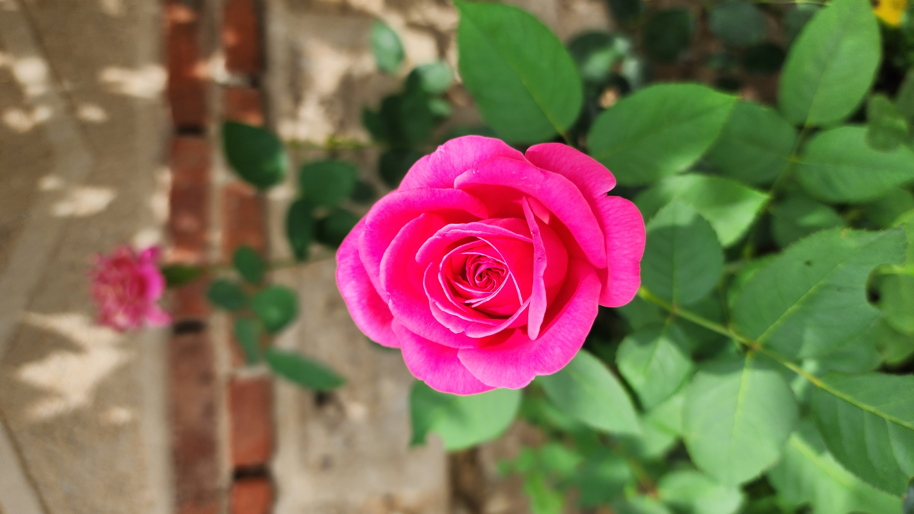

我对这次旅行还是挺满意的，唯一不满意的地方是……我不会开车！
我体验到了北方民众的日常生活，无论是在赤峰的公园里散步，还是在锦州的小吃街上徘徊，我都能感觉到一种生机与活力，在赤峰（更准确点说，宁城）的感觉更好，因为人少、凉爽，以及安静。
当然，我也了解到古建筑原来非常深奥，也第一次真正知道了瓦当和滴水的真正用处，只能说这玩意儿越学越深，无底洞啊！（有空可能看看梁思成的科普作品《图像中国建筑史》）
去之前的行程：
C2620 列车
05 车 13 D 号；（54.5 元）G3675 列车
08 车 09 D 号；（195 元）到达后：
去夜市随便逛逛（实际没逛，当天晚上风太大）
车费 249.5 + 房费 268.95 = 518.45 元
除红山公园外，以下景点开放时间均为 09:00 – 16:30。
去了：


没去：
全部免费
赤峰宁城来回都有高铁，大概一小时一班，40 元左右。
去了：


宁城县车站候车时补充：大明塔太偏了，在赤峰市宁城县下面的一个小村庄附近，没有公交，网约车也打不到！参观完后，我手机还快没电了，真可谓弹尽粮绝，绝望之时，恰巧遇到一辆出租，司机是个善良的大妈，一路上也聊了几句，微伊吾其无酒店可归也！真可谓柳暗花明又一村！
没去：
D7796 列车
07 车，无座；（121 元）入住后吃点东西，然后直接去景点：
去了：


没去：
车费 121 + 房费 216 = 337 元
K7503 列车 15 车
024 号，硬座（11 元）。今天的行程倒是都去了，奉国寺名不虚传，果然震撼！主要是那个大庑顶太有气势了，殿里面的佛像也很大，十四个菩萨也别惟妙惟俏！
辽沈战役纪念馆太专业了，里面好多数据、作战路线图之类的东西看不懂，普通人能看懂的也就一些物件、照片，所以我觉得一般。（但是公园还行，当然我指凉快的时候）




以下全部腰斩，因为都是自然景点，得坐大巴去太累了，而且关键是得知能回学校了！
这两个景点都有公交专线，百度可查：